디자이너에게 이제 무엇을 기대하나요?
발표자 Kirk는 디자이너가 평범한 프로덕트 디자이너에서 디자인 엔지니어 쪽으로 옮겨 가고 있다고 봐요. 완벽한 코드를 쓰라는 뜻은 아니에요. Figma 화면 한 장보다 더 많은 걸, 그러니까 실제로 동작하는 모습을 만들어 보여 줄 수 있어야 한다는 뜻이에요.
그 자신도 요즘 Figma는 디자인 시스템 작업에만 써요. 와이어프레임이나 실제 화면 디자인에 Figma를 마지막으로 쓴 게 언제인지 기억나지 않는다고 해요. 그래서 이제 기준은 "Figma를 안다"가 아니라 "디자인 쪽 AI 도구를 대부분 알고, 각각 언제 쓰는지 안다"예요.
도구 하나만 파면 안 되는 이유
"나는 이 도구 두 개만 쓸래"라는 태도를 경계해요. 이 분야는 일주일 사이에도 다른 도구가 더 좋은 기능을 내놓아요. 발표자도 다 만들어 둔 Claude Code 튜토리얼을 업데이트 때문에 다시 찍었다고 해요. 회사마다 쓰는 도구가 달라서, 면접관이 어떤 도구를 물을지도 알 수 없어요.
아래 슬라이드가 최근 실제 작업 흐름이에요. 왼쪽부터 Grok, Claude, ChatGPT, 다시 Grok을 거쳐 마지막에 Figma로 들어가요. 화면 몇 장을 만드는 데 도구 네 개를 오갔어요.
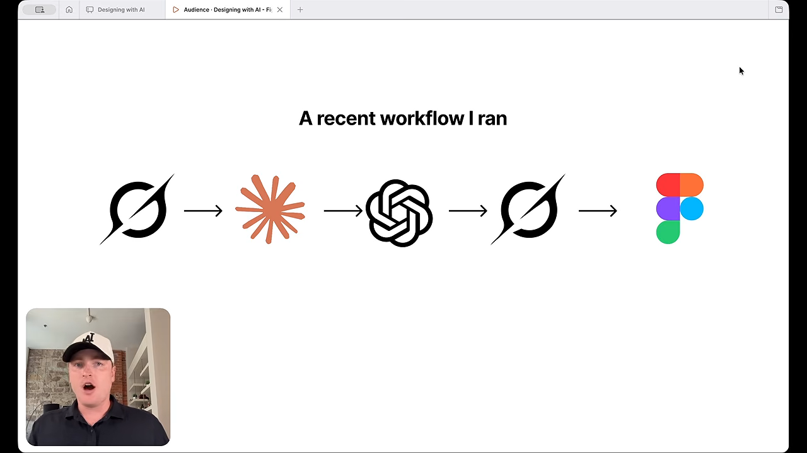
"다 해 주는 도구를 찾아 와"라는 요청
발표자가 운영하는 커뮤니티에는 상사에게 이런 요청을 받았다는 질문이 자주 와요. 아래 슬라이드의 문장 그대로예요. 한 번의 프롬프트로 세계 최고 수준 UI(User Interface)를 만들고, 디자인 시스템에 연결되고, 완벽한 코드까지 내놓는 도구를 찾으라는 거예요.
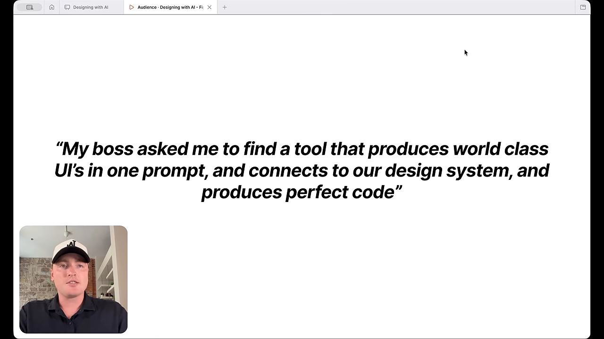
대신 여러 도구를 오가면 "꽤 좋은 UI를 몇 번의 프롬프트로, 디자인 시스템에 어느 정도 연결해서, 꽤 괜찮은 코드로" 만드는 데까지는 갈 수 있어요. 한 줄 프롬프트로 사용자 흐름 전체를 뽑았다는 영상도 믿지 말라고 해요. 그런 결과는 대개 뒤에서 한두 시간 준비한 거예요.
직급별로 기대하는 AI 지식
디자이너가 코딩을 제대로 배워야 하냐는 질문에는 "아니요"라고 답해요. 핵심은 개발자 없이 아이디어를 살려 보여 주고, 그 작업 공간을 개발자에게 넘겨 다듬게 하는 거예요. 면접에서는 직급과 상관없이 AI 이야기가 반드시 나온다고 해요. 슬라이드는 직급별 기대치를 세 줄로 정리해요.
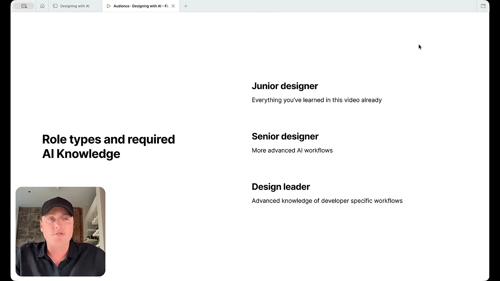
디자인 리더 쪽 변화가 가장 커요. 2년 전 리더는 디자인 경력이 긴 사람이었는데, 요즘은 개발자 워크플로에 밝은 사람이 많아졌다고 해요. 그래도 Figma 실력은 AI 실력만큼 갖춰야 해요. 프로젝트에 따라 손으로 픽셀을 옮겨야 하고, 큰 회사 중에도 AI 도구를 아직 못 쓰는 곳이 많기 때문이에요.
같은 프롬프트로 도구를 비교해 보니
본격적인 실습 전에 실험을 하나 해요. 같은 프롬프트를 여러 도구에 넣고 걸린 시간, 쓴 토큰, 디자인 품질을 비교하는 거예요. 프롬프트는 아래 슬라이드 그대로예요. 뉴욕, 보스턴, 토론토 같은 북미 대도시의 고액 자산가를 상대하는 자산관리 회사 'UI Investments'의 대시보드를 만들라는 내용이에요. 흰 배경, 선명한 타이포그래피, 프리미엄 스타일을 요구하고, 고객이 큰 구매 목표에 맞게 가고 있는지 보여 줘야 해요.
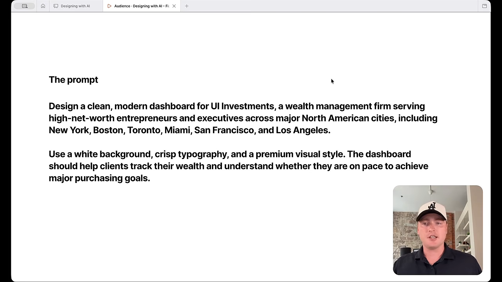
도구별 결과
비교한 도구와 결과를 한 표로 모았어요. 시간과 토큰은 영상의 비교 슬라이드와 화면에 나온 값이에요.
| 도구 (모델) | 시간 | 토큰 | 발표자 평가 |
|---|---|---|---|
| Grok | 약 2분 | 47k | 좋음. 순자산을 사이드바에 넣은 독특한 구성 |
| Claude Code (Fable 5) | 17분 | 128.6k | 좋음. 가장 깔끔하지만 시간과 토큰을 많이 씀 |
| Claude Code (Opus 4.8) | 8분 | 75.5k | 보통. AI가 만든 티가 남 |
| Codex (5.6 Sol) | 12분 | 표시 안 됨 | 보통. 시간에 비해 아쉬움 |
| Codex (GPT-6 Astra) | — | — | 괜찮지만 '한 줄로 세계 최고 디자인'은 아님 |
| Cursor (Grok 4.5) | — | — | Grok 플랫폼보다 훨씬 AI스러움 |
| Claude Design | — | — | 평소보다 크게 못함 |
| Figma AI, Google Stitch | — | — | 가장 나쁨. 텍스트가 어긋나고 여백이 이상함 |
Grok 결과는 큰 순자산 숫자 대신 왼쪽 사이드바에 자산 구성(유동자산, 투자, 부동산, 현금 여력)을 넣었어요. 가운데에는 구매 목표 카드가 있고, 카드마다 목표보다 앞서는지, 위험한지, 뒤처졌는지를 표시해요. 2분짜리 결과로는 아주 좋다고 평가해요.
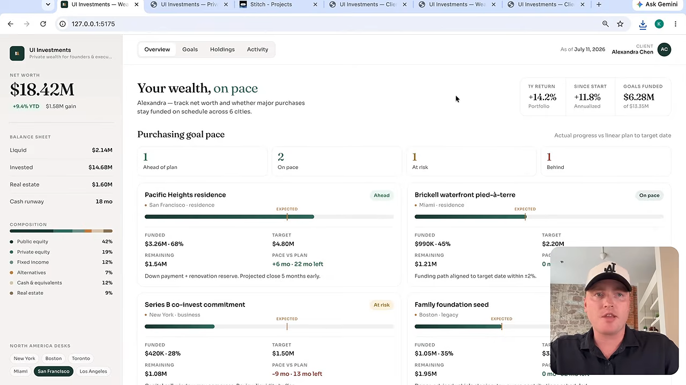
Claude Fable 5 결과는 반대로 큰 순자산 숫자를 맨 위에 두고, 아래에 수익률과 유동자산 위젯, 순자산 그래프, 오른쪽에 자산 배분 막대를 놓았어요. 위젯끼리 은근하게 어울리고 글자 처리도 좋아요. 대신 그만한 시간과 토큰을 썼으니 이 정도는 나와야 한다는 평이에요.
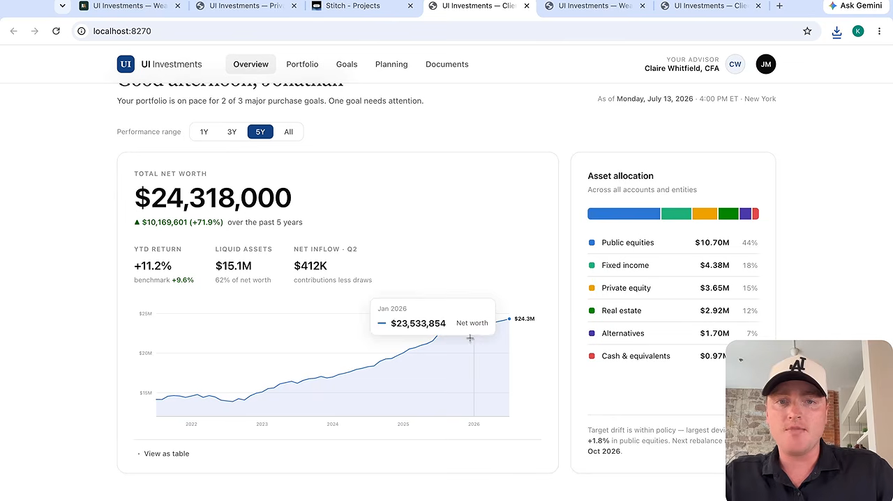
교훈 1: 플랫폼은 모델이 아니에요
가장 중요한 교훈이에요. 아래 슬라이드 왼쪽은 Grok 플랫폼에서, 오른쪽은 Cursor에서 Grok 모델로 만든 결과예요. 같은 모델인데 오른쪽이 훨씬 AI가 만든 티가 나요. 왼쪽은 조금만 손보면 고객에게 넘겨도 알아채지 못할 수준이라고 해요.
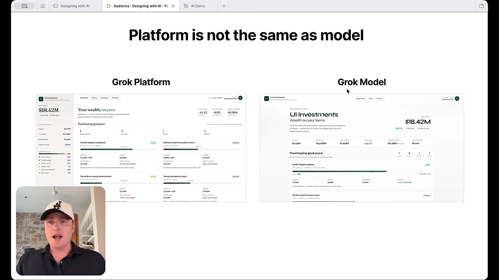
발표자에게 "Claude Code에서 당신만큼 결과가 안 나온다"고 묻는 디자이너들에게 무엇을 쓰냐고 되물으면, 대부분 Cursor라고 답한대요.
교훈 2: Figma AI와 Stitch는 쓰는 방법이 따로 있어요
Figma AI에 화면 하나를 설명하는 프롬프트를 주면 결과가 나빠요. 하지만 Figma가 제안하는 프롬프트, 예를 들어 '모바일 장바구니 화면 세 가지 변형을 새 프레임에 만들어 줘'를 쓰면 꽤 좋은 결과가 나와요. 온라인에서 Figma AI를 칭찬하는 사례도 대부분 이런 추천 프롬프트에서 나온 거래요.
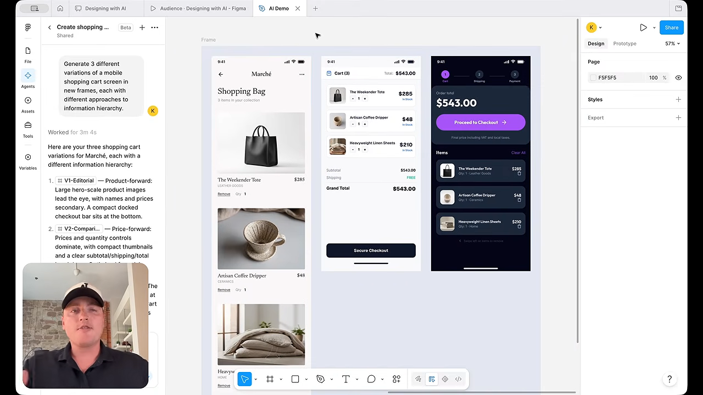
Google Stitch도 같아요. 자체 프롬프트로 전체 흐름을 요청하면 괜찮지만, 직접 쓴 화면 프롬프트에는 약해요. 그래도 기능만 보면 이상에 가장 가까운 디자인 도구라고 해요. Figma 같은 캔버스에서 변형을 만들고, 다시 생성하고, 모바일 버전을 추가하는 일이 쉬워요. 아래 화면 위쪽의 Generate, Modify, Preview 메뉴가 그 기능이에요.
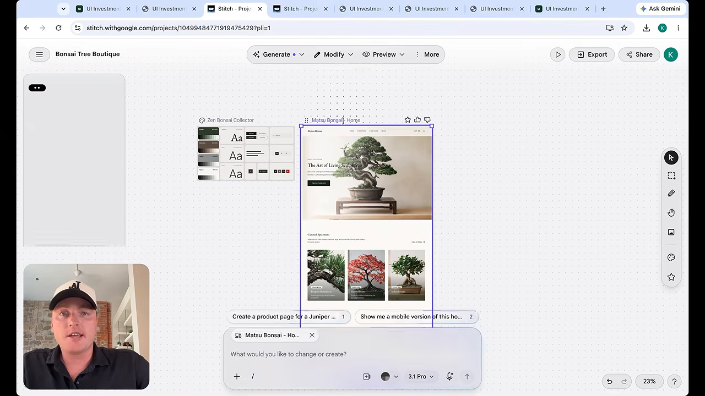
교훈 3: 가장 효율적인 도구 하나에 기대지 마세요
시간과 토큰을 모은 슬라이드예요. 위에서부터 Grok, Claude Fable, Claude Opus, Codex 순서예요. 숫자만 보면 Grok 하나만 쓰고 싶어져요.
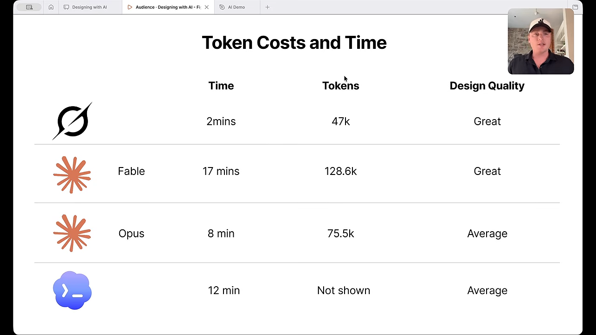
발표자는 반대로 말해요. Grok은 새 도구라 회사가 쓰지 않을 수 있고, 나중에 비싸질 수도 있어요. 대부분의 기업은 Claude를 쓰니, 혼자 일하는 프리랜서가 아니라면 Grok만 익히는 건 위험해요. 회사가 Claude를 쓴다고 Fable만 쓰는 것도 위험해요. Anthropic이 Fable 접근을 제한할 수 있다는 소문이 있고, 회사가 막을 수도 있어요. 다음 달 AI가 어떤 모습일지 아무도 모른다는 게 요지예요.
캔버스에서 AI로 디자인하기: Paper
Figma처럼 캔버스 위에서 AI가 디자인하는 도구도 있어요. 대표적인 게 Paper와 pen.dev(옛 이름 Pencil)예요. 다만 Stitch처럼 아래쪽에 프롬프트 입력창이 있는 게 아니에요. SVG(Scalable Vector Graphics)나 이미지 생성 같은 일부 기능 말고는, Claude Code 같은 에이전트를 MCP(Model Context Protocol)로 연결해서 캔버스에 그리게 해야 해요. 연결 방법은 Paper 문서의 MCP 페이지에 도구별로 나와 있어요.
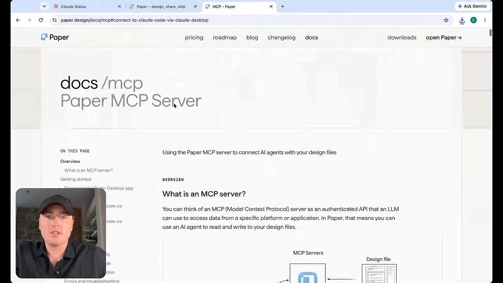
'재무 관리 앱 대시보드를 Paper 안에 만들어 줘'라고 하자, 캔버스 위에 사이드바, 인사말, 순자산 그래프, 현금 흐름, 카테고리별 지출, 최근 활동이 있는 대시보드가 그려졌어요. 결과는 괜찮았어요. 문제는 비용이에요. Opus 5로 대시보드 한 장을 만드는 데 155.4k 토큰이 들었어요.
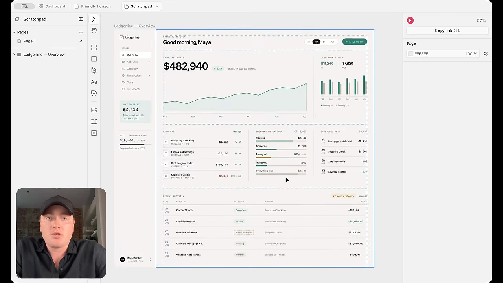
그래서 Paper나 pen.dev를 쓰지 말라는 건 아니에요. 좋은 결과를 낼 수 있지만, 토큰 비용이 결과보다 큰 경우가 많으니 조심해서 쓰라는 거예요.
아이디어 넓히기와 레퍼런스 찾기
이제 실제 디자인 과정의 단계별로 도구를 써 봐요. 첫 단계는 아이디어를 넓히는 반복과 탐색이에요.
ChatGPT 이미지로 빠른 첫 시안
ChatGPT는 디자인에 무엇을 넣을지 묻는 용도가 아니에요. 이미지 생성으로 시안을 뽑는 용도예요. 회사나 개인 구독이 있다면 싸고 쉬워요. 앞의 UI Investments 프롬프트를 그대로 넣자 2분쯤 뒤 아래 시안이 나왔어요. 상단 카드 네 개, 순자산 그래프, 원형 자산 배분 차트까지 갖춘 그럴듯한 첫 안이에요.
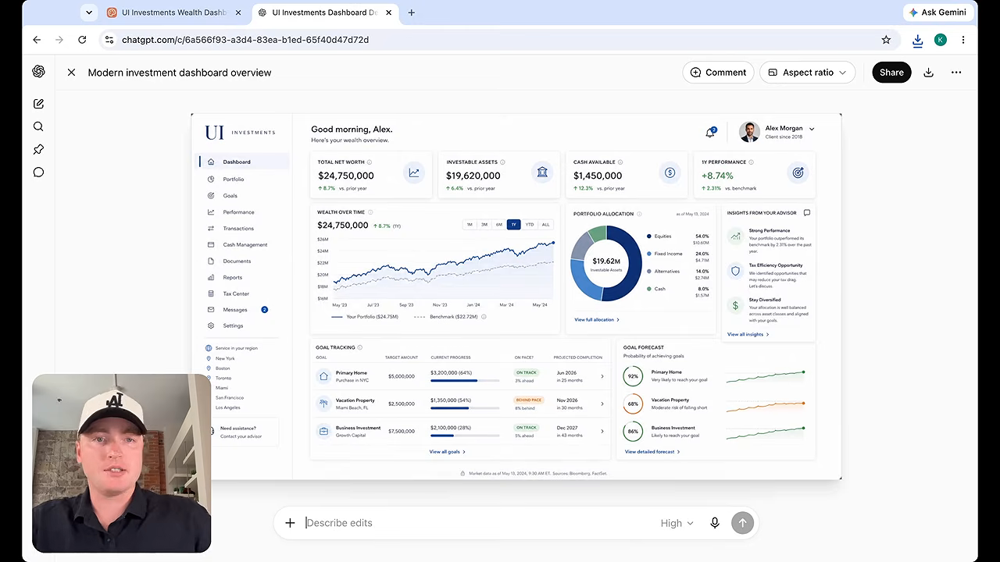
그림이라 바로 쓸 수는 없어요. Grok, Claude Code, Codex, Claude Design 같은 도구에 이 이미지를 주고 다시 만들게 해야 해요. 그래서 ChatGPT의 자리는 대략적인 반복 단계까지예요.
Claude Design으로 와이어프레임
Claude Design은 반복과 탐색에도 좋아요. 고품질 시안은 시간과 크레딧이 많이 들지만, 모델을 Fable 5에서 Opus 4.8로 바꾸고 와이어프레임 템플릿을 고르면 레이아웃만 보는 로우파이 시안이 나와요. 이번에 같은 프롬프트로 받은 결과가 아래 화면이에요.
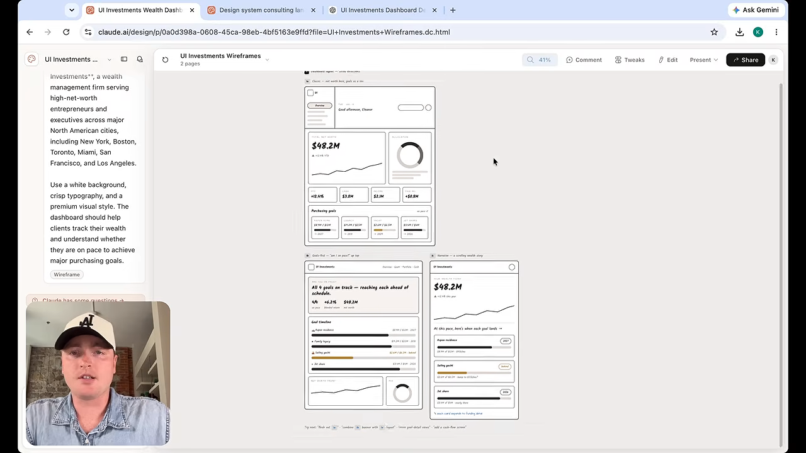
평소 결과는 이쪽이라고 해요. 예전 튜토리얼에서 받은 와이어프레임으로, 세 가지 레이아웃이 나란히 있고 각 안이 무엇을 강조하는지 왼쪽에 설명이 붙어 있어요. 고객에게 "어느 쪽이 좋으세요?"라고 바로 물어볼 수 있는 수준이에요.
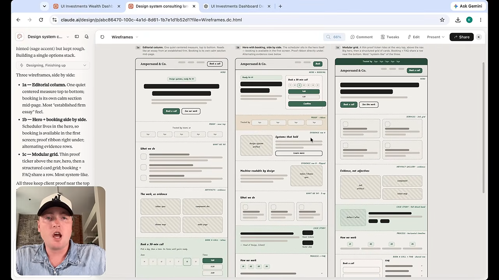
Mobbin MCP로 레퍼런스 찾기
Mobbin은 실제 앱과 웹의 화면과 흐름을 모아 둔 저장소예요. 설정의 MCP 메뉴에서 여러 AI 도구를 연결할 수 있어요. 연결하면 Mobbin 전체를 AI가 대신 뒤져 줘요. 아래 화면에서 위쪽이 이미 연결된 Claude, 아래 'Connect more tools'가 Claude Code, Cursor, Codex, v0 같은 다른 도구예요.
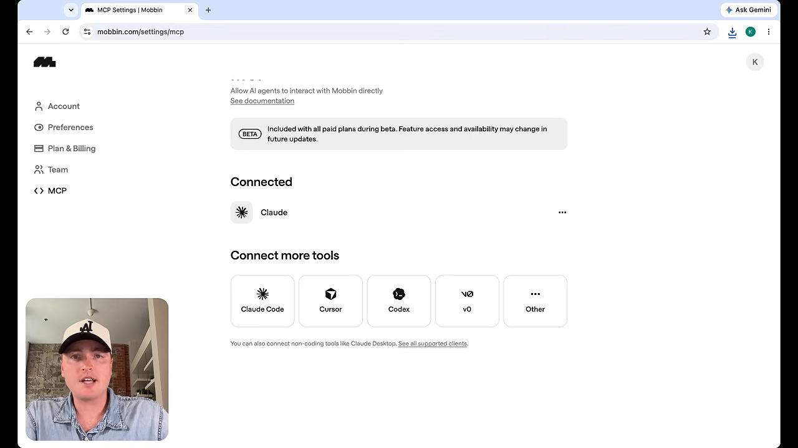
연결한 뒤 '여백이 많은 대시보드 디자인을 Mobbin에서 찾아 줘'라고 하자, 여백이 넉넉한 웹 대시보드 8개를 골라 왔어요. 아래 답변에는 Plausible Analytics가 가장 순수한 예라는 설명과 함께 Vercel, Graphite, Coda, Whop이 이유와 함께 정리돼 있고, 각 이름은 Mobbin 화면으로 바로 이어져요.
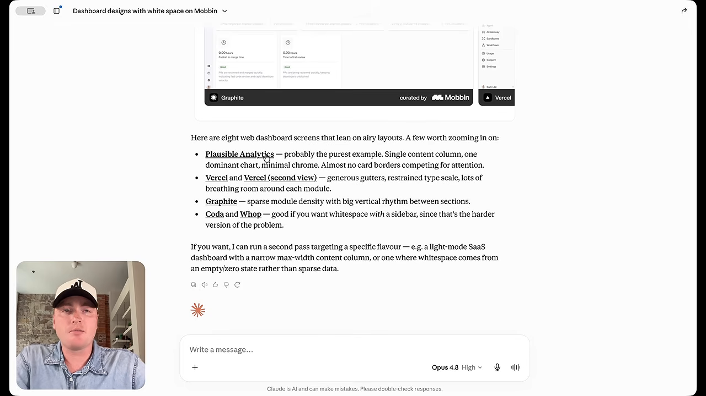
무드보드에서 디자인 방향 문서까지
결과물을 만들 때는 Claude Code를 써요. 고객용 산출물이나 처음부터 만드는 앱의 방향을 잡을 때예요. '대시보드 디자인 무드보드를 Mobbin에서 만들어 줘'라는 짧은 프롬프트에 Opus 4.8은 28개 레퍼런스를 네 가지 스타일로 묶은 페이지를 만들었어요. 카드를 누르면 Mobbin의 원래 화면이 열려요.
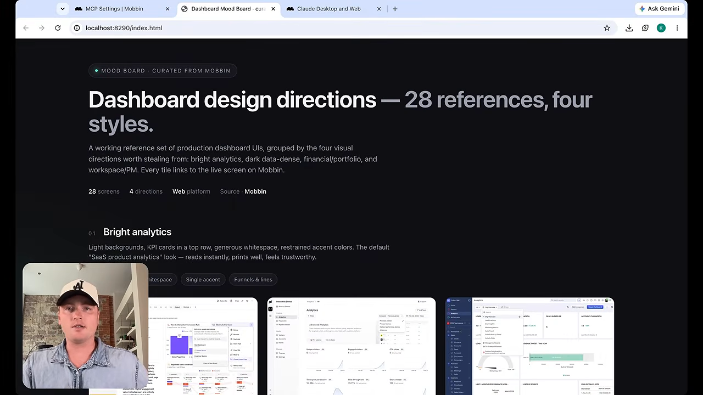
왼쪽 대화 창에는 네 가지 방향이 표로 정리돼 있어요. 방향마다 해당 앱과 특징적인 처리 방식이 붙어 있어요. 아래 입력창에는 다음 프롬프트인 'Bright analytics의 시각적 방향을 핵심 테마로 쪼개 줘'가 적혀 있어요.
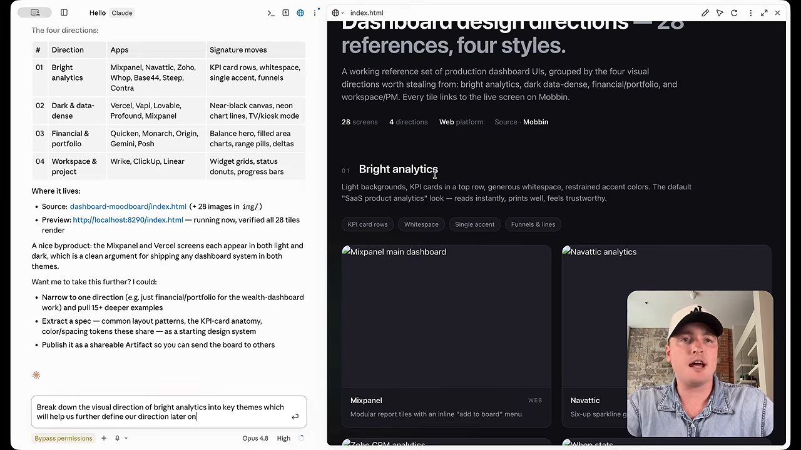
그 결과가 아래 페이지예요. Bright analytics를 여섯 가지 결정으로 풀었어요. 위쪽 'Shared DNA' 상자에는 일곱 레퍼런스가 공통으로 가진 특징(밝은 캔버스, 카드 중심 구성, 강조색 하나, 고정된 왼쪽 내비게이션 등)이 있고, 아래로 표면과 온기, 레이아웃 원형, 색과 강조 전략, 데이터 시각화 어휘, 숫자와 증감 표시, 밀도와 리듬이 이어져요.
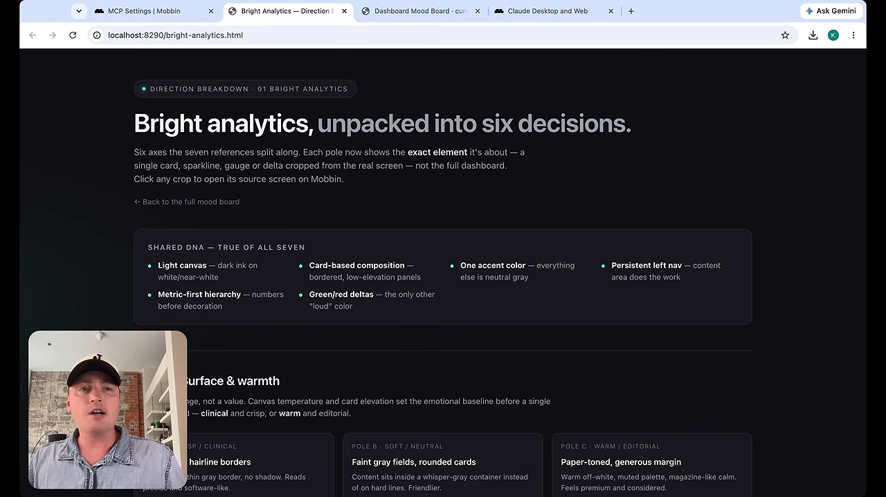
발표자는 이 문서를 Claude Code로 PDF(Portable Document Format)로도 뽑아 뒀어요. 디자인 시스템은 없지만 마음에 드는 거친 방향이 있을 때, 이 PDF로 스킬을 만들어 AI의 디자인을 이끌 수 있어요. 그게 Mobbin MCP의 진짜 가치라고 해요.
스킬로 디자인 방향을 붙잡아 두기
이제 일관성을 지키는 이야기로 넘어가요. 열쇠는 스킬이에요. 그런데 '스킬'이라는 말이 두 군데에서 다른 뜻으로 쓰여서 헷갈리기 쉬워요. 하나는 AI가 Figma 캔버스를 다루게 해 주는 Figma 커뮤니티 스킬이고, 다른 하나는 내 디자인 작업 방식을 담은 나만의 스킬이에요. 발표자는 뒤쪽에서 훨씬 큰 가치를 얻는다고 해요.
Figma 커뮤니티 스킬: 설치와 연결은 따로
Codex나 Claude Code, Grok에서 만든 디자인을 이미지가 아니라 오토 레이아웃과 제대로 된 레이어를 갖춘 Figma 디자인으로 보내려면 이 스킬이 필요해요. 아래가 Figma 커뮤니티의 스킬 페이지예요. 맨 위 '/figma-use'가 토큰, 변수, 컴포넌트를 캔버스에서 다루는 법을 알려 주는 기초 스킬이고, 그 아래로 디자인 생성, 라이브러리 생성 같은 스킬이 이어져요.
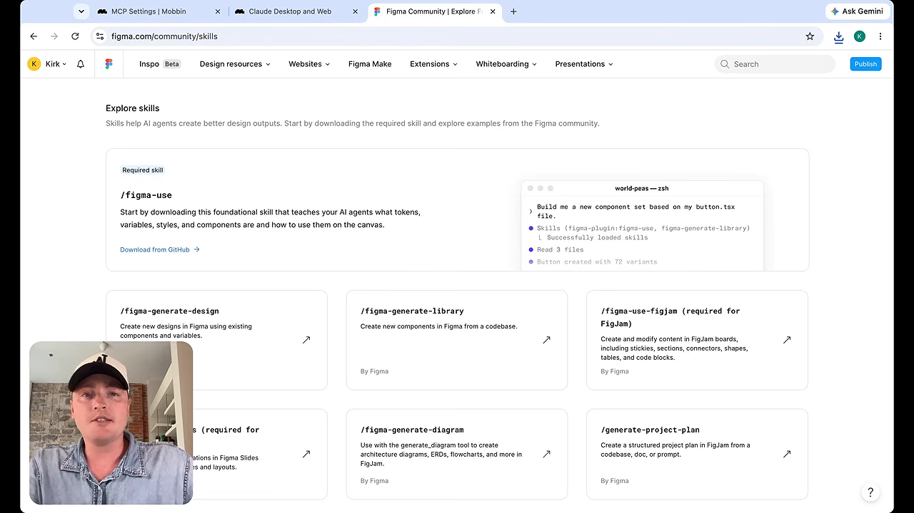
Claude Code에서는 플러그인의 파트너 목록에서 Figma를 찾아 설치하면 돼요. 아래 화면의 Skills 칸에 '/figma-code-connect', '/figma-generate-design' 같은 스킬 12개가 보이고, 그 아래 Connectors 칸에 figma가 따로 있어요.
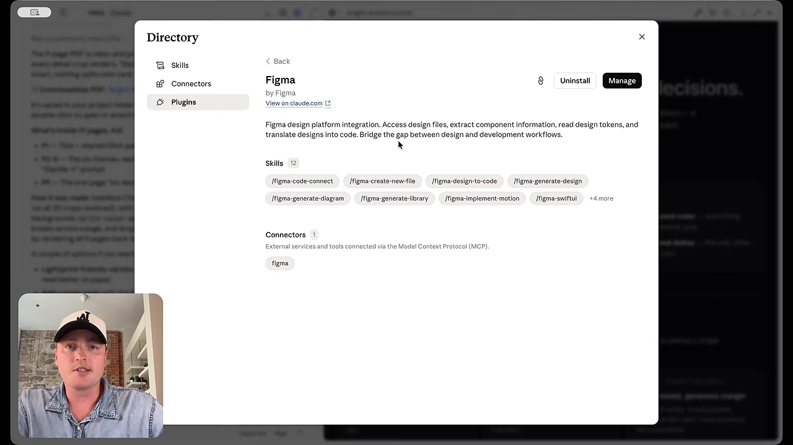
커넥터까지 연결하면 AI가 Figma 캔버스와 직접 주고받을 수 있어요. 컴포넌트, 토큰, 오토 레이아웃, 그리고 정해 둔 규칙을 지키며 디자인을 Figma로 보낼 수 있게 돼요.
두 종류의 나만의 스킬
발표자는 디자인 작업을 돕는 스킬을 두 가지로 나눠요.
| 지향 스킬 | 디자인 시스템 스킬 | |
|---|---|---|
| 담는 것 | 마음에 드는 디자인 처리와 느낌 | 브랜드 가이드라인과 디자인 시스템 규칙 |
| 지키는 정도 | 벗어나도 괜찮은 대략적 방향 | 반드시 지켜야 함 |
| 쓰는 때 | Figma 파일도 디자인 시스템도 없이 처음 시작할 때 | 회사에 디자인 시스템이 있을 때 |
디자인 시스템 스킬은 뒤에서 자세히 다뤄요. 여기서는 지향 스킬을 만들어 봐요.
지향 스킬 만들기
앞에서 만든 Bright analytics PDF를 첨부하고, 이 방향을 담은 스킬을 만들어 달라고 해요. 같은 방향에 맞는 경쟁사 화면도 넣으라고 하면서 Mobbin이 찾아 준 회사 이름을 그대로 붙였어요. 아래 프롬프트에서 파란색으로 선택된 부분이 그 목록이에요.
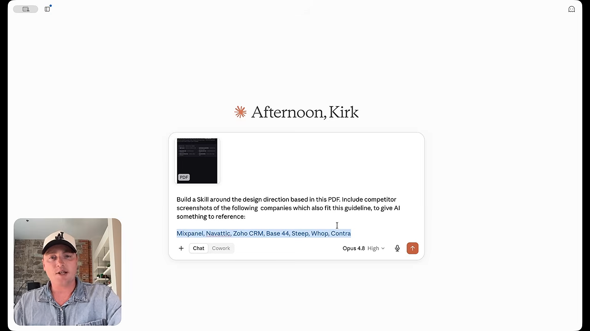
나온 스킬이 아래 화면이에요. 오른쪽 SKILL.md 설명에는 이 스킬을 언제 써야 하는지(대시보드, 관리자 패널, 지표 화면 등)가 길게 적혀 있고, 왼쪽 목록에는 레퍼런스 라이브러리, 컴포넌트 구조, 실패 패턴 같은 참고 파일이 함께 들어 있어요. 핵심은 '여섯 가지 결정을 기본값에 맡기지 말고 의도적으로 내려라'예요.
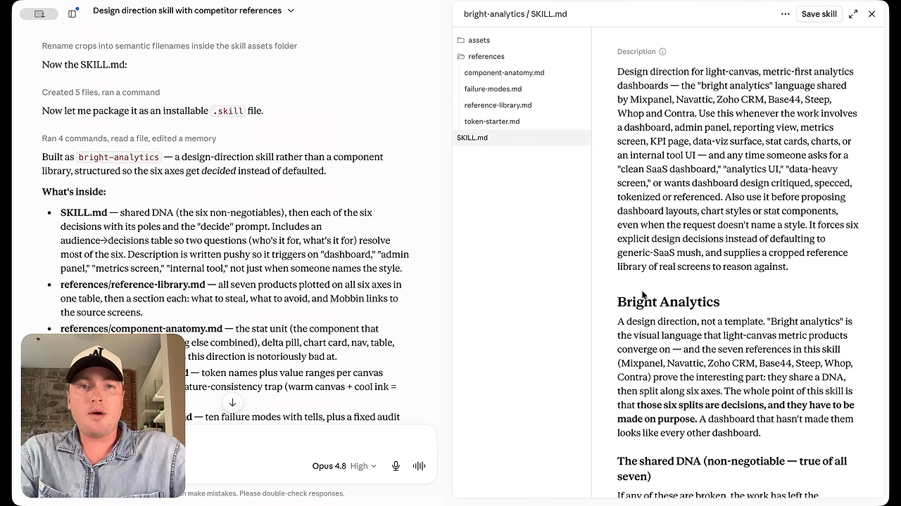
스킬로 가격표 섹션 만들기
'bright analytics 스킬로 가격표 섹션을 만들어 줘'라는 짧은 프롬프트를 Fable 5로 돌렸어요. 왼쪽 대화를 보면 AI가 스킬에 따라 여섯 가지 결정(표면, 레이아웃, 강조색, 데이터 시각화, 숫자 단위 등)을 먼저 적고 나서 디자인했어요. 오른쪽 결과는 Starter, Growth, Scale 세 요금제 카드인데, 가운데 Growth만 보라색 강조색을 써요.
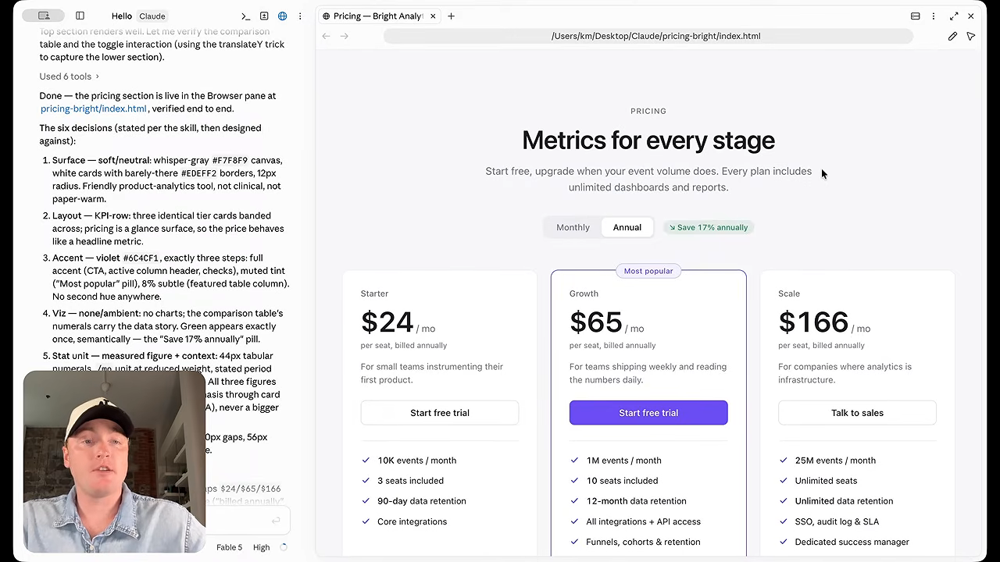
여러 고객이나 프로젝트를 동시에 다룬다면 스킬을 켜고 끄는 데 신경 써야 해요. 한 고객의 브랜드 가이드가 다른 프로젝트에 섞여 들어가지 않게 하려는 거예요. 필요 없는 스킬을 꺼 두면 스킬 이름을 매번 부르지 않아도 AI가 알아서 해당 스킬을 불러요.
기본 워크플로: 반복, 프로토타입, 디자인 시스템
여기서부터는 발표자가 평소 가장 자주 쓰는 AI 디자인 흐름이에요. 원래 영상 순서로는 디자인 시스템 스킬이 먼저였지만, 편집하면서 뒤로 옮겼다고 해요. 이 흐름이 정답은 아니고, 도구가 바뀌면 흐름도 바뀌어요. 핵심은 "도구를 잘하는 일 기준으로 섞어 쓴다"예요.
아래 슬라이드처럼 세 단계로 나눠요. 아직 디자인을 시작하기 전 아이디어를 넓히는 반복, 고른 안을 여러 페이지로 키우는 프로토타입, 그리고 회사 디자인 시스템에 맞추는 작업이에요.
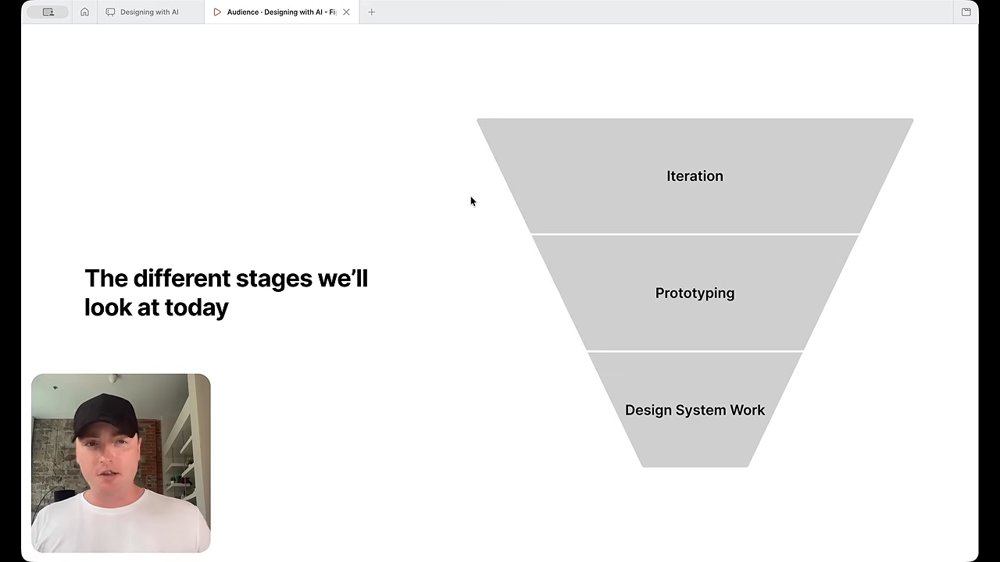
단계마다 어떤 도구를 왜 쓰는지는 영상 곳곳에 흩어져 나와요. 한 그림으로 모으면 이래요.
① 반복: ChatGPT로 데이터 밀도별 시안
이 단계는 정확도가 아니라 선택지의 질이 중요해요. AI가 글자를 기호로 망쳐도 상관없어요. 촘촘한 안, 여백이 많은 안처럼 레이아웃 선택지가 다양하면 돼요. Mobbin은 시간과 토큰이 드니 나중에 '다른 회사는 어떻게 하나' 리서치할 때 쓰고, 여기서는 쓰지 않아요.
ChatGPT에 '데이터 밀도가 다른 대시보드 디자인 네 개를 만들어 줘. 제품은 재무 관리 앱이야'라고 하자, 20초쯤 만에 아래 이미지가 나왔어요. 왼쪽 위부터 저밀도, 중간 밀도, 고밀도, 파워 유저용 고밀도 순이에요.
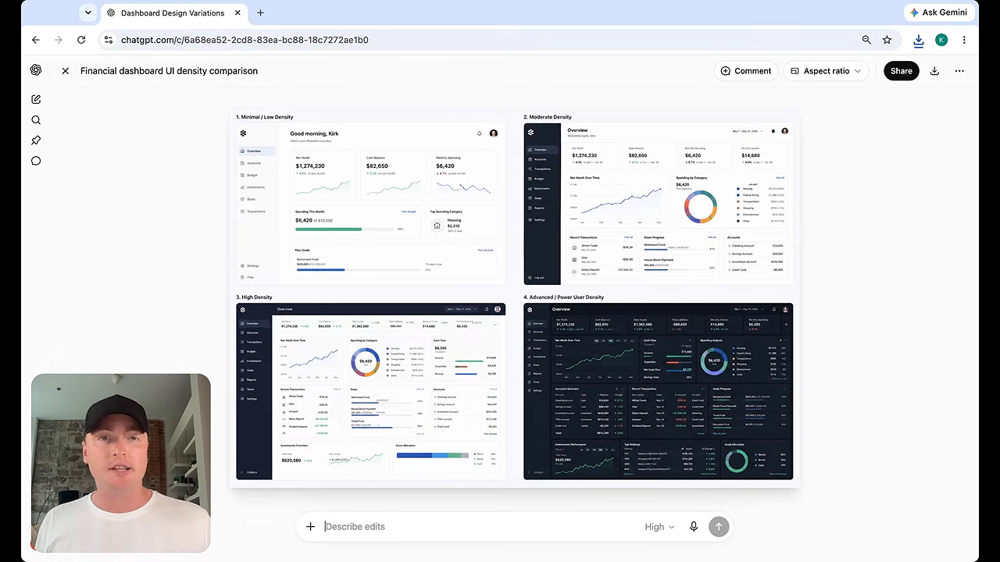
그다음은 대화로 다듬어요. 세 안 모두 원형 차트를 쓰고 있으니 원형 차트 없는 안을 달라고 하는 식이에요. 한 시간쯤 써도 좋은 예시가 쌓여요. 발표자는 4번 안을 라이트 모드로 바꿔 따로 이미지로 받아 뒀어요. 뒤에서 Grok에 넘길 이미지예요.
① 반복: Grok Build로 클릭되는 시안
Grok에는 아직 Claude Code나 Codex 같은 화면 앱이 없어서, grok.com/build의 설치 명령을 터미널에 붙여 넣어 써요. 아래 페이지 가운데의 'curl' 명령이 그것이에요. 페이지 설명대로 Grok Build는 터미널에서 도는 코딩 에이전트예요.
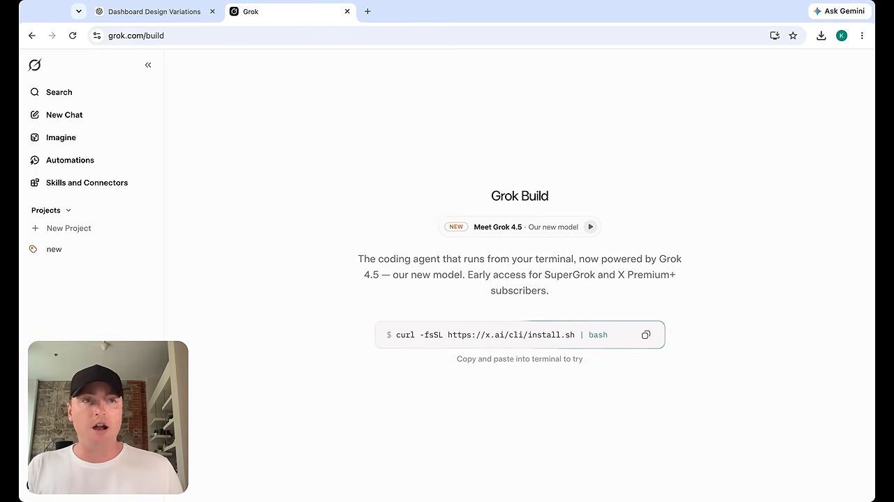
같은 요청에 '다른 모양으로, 이전에 만든 대시보드에 영향받지 말고'를 붙여 돌리자, 네 가지 방향을 고를 수 있는 시작 페이지가 나왔어요. 아래 표의 밀도 열을 보면 Atelier가 Low, Fieldbook이 Medium, Meridian이 Medium-high, SignalDesk가 High예요. 이름을 누르면 각 대시보드가 열려요.
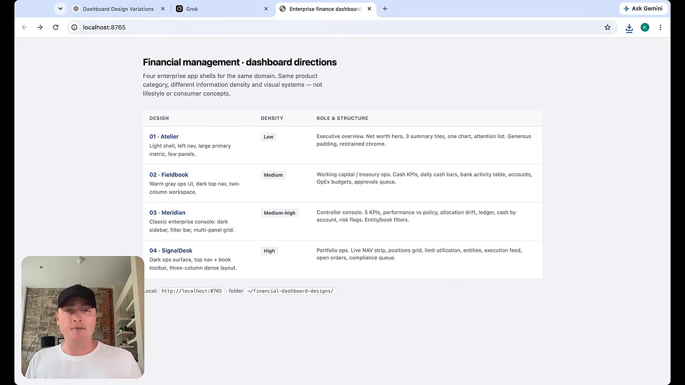
한 가지 주의할 점이 있어요. Grok은 네 개를 한꺼번에 만드는 데는 약해요. 영상은 시간 때문에 한 번에 시켰지만, 실제로는 저밀도 하나를 먼저 만들고, 다음에 중간 밀도를 만들고, 마지막에 둘을 모아 띄우는 시작 페이지를 만들라고 권해요.
ChatGPT 이미지를 살리는 것도 돼요. 앞에서 받아 둔 라이트 모드 이미지를 주고 '이걸 살려서 로컬에서 띄워 줘'라고 하자 아래 'WealthView' 대시보드가 나왔어요. 왼쪽 메뉴의 Accounts, Transactions는 아직 비어 있어요.
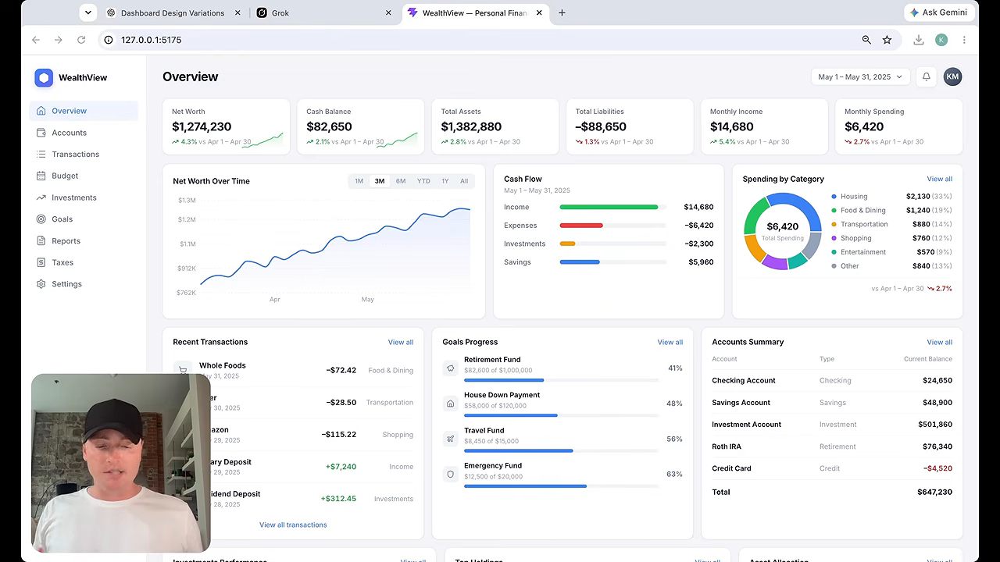
② 프로토타입: Antigravity의 '만들고, 보고, 고치기'
빈 페이지를 채우는 단계예요. Fable 5만 아니면 어떤 도구로도 할 수 있지만, 발표자는 Google Antigravity를 써요. Google판 Claude Code나 Codex라고 보면 돼요. 이유는 이래요. 디자이너는 만들고, 보고, 고쳐요. AI는 만들기만 잘해서, 무엇을 보고 고칠지 사람이 말해 줘야 해요. Antigravity는 브라우저를 잘 다뤄서 이 세 단계를 스스로 해요. 결과를 띄우고, 화면을 캡처하고, 창을 줄였다 늘려 반응형을 확인하고, 본 것을 바탕으로 고쳐요.
Grok이 만든 폴더를 Antigravity에서 열고 '로컬에서 띄우고 지금 디자인 패턴과 처리 방식을 파악해 줘'라고 했어요. 아래 답변의 'Responsive Breakdown'을 보면, 묻지 않았는데도 미디어 쿼리 브레이크포인트 세 개(1400px, 1100px, 768px)에서 레이아웃이 어떻게 바뀌는지까지 확인했어요.
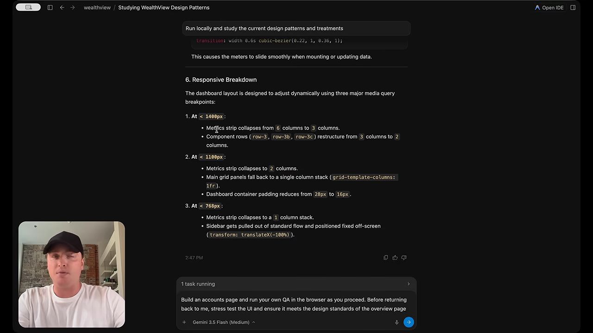
프롬프트를 돌리자 'Chrome이 자동 테스트 소프트웨어에 의해 제어되고 있다'는 막대가 뜬 브라우저가 열리고, 사람이 아무것도 누르지 않는데 화면이 바뀌어요. 아래는 은행 계좌 연결 흐름을 스스로 눌러 보는 장면이에요.
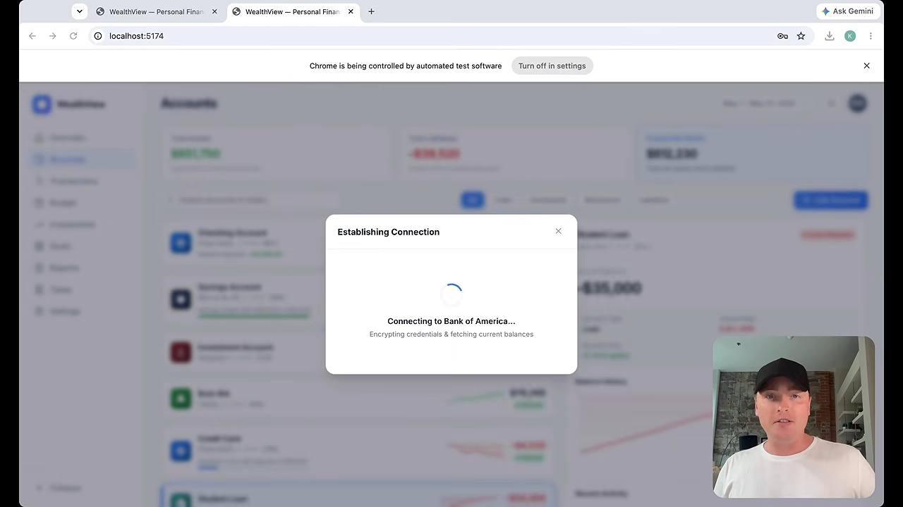
끝나고 나면 무엇을 확인했는지 정리해 줘요. 아래 화면 위쪽의 '/browser http://localhost:5174'가 발표자가 쓴 명령이에요. 그 아래에 브라우저 하위 에이전트가 확인한 항목(대시보드 이동, 계좌 선택, Plaid 인증 실패 흉내, 계좌 추가 후 순자산 갱신)과, 세션 녹화를 작업 폴더에 저장했다는 내용이 있어요.
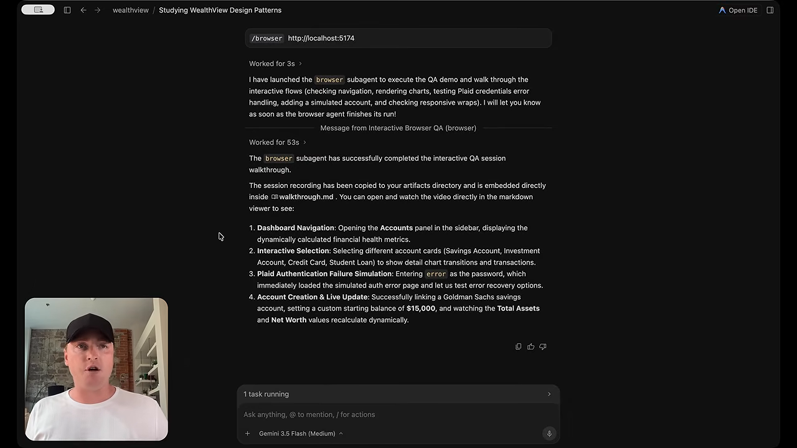
발표자는 여기서 주사위 비유를 들어요. 같은 주사위를 굴려도 매번 같은 숫자가 나오지 않듯, 같은 프롬프트를 써도 Antigravity가 늘 같은 수준으로 QA하지는 않아요. 설정이나 Chrome 상태에 따라 알아서 하기도, 안 하기도 해요.
③ 디자인 시스템: Claude로 브랜드 입히기
이해관계자에게 방향은 인정받았어도, 경영진에게 보이면 바로 "브랜드와 안 맞는다"는 말이 나와요. 지금 화면은 Figma의 변수, 토큰, 컴포넌트 어디에도 연결돼 있지 않아요. 이 단계는 Claude로 해요. 큰 디자인 시스템 맥락을 다룰 때 Claude가 가장 정확했다는 게 발표자의 경험이에요. 반대 의견도 있을 수 있다고 덧붙여요.
같은 폴더를 Claude Code에서 열고, 뒤에서 만들 타입 스타일·변수 규칙·컴포넌트 스킬 세 개를 부른 뒤 '우리 디자인 시스템에 맞춰 줘. 아직 Figma에는 올리지 마'라고 해요. 모델은 Opus 5예요.
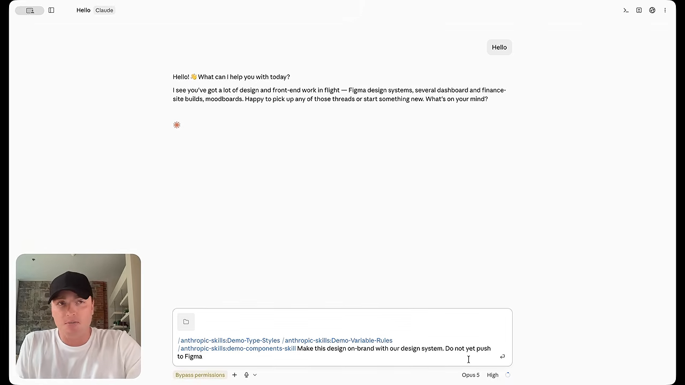
첫 결과예요. 위의 Grok 화면과 비교하면 로고가 검은 사각형으로 바뀌고, 지표 카드가 흰 카드와 얇은 테두리로 정리됐어요. 스타일이 완전히 디자인 시스템 쪽으로 넘어왔고, 실제 컴포넌트도 썼어요.
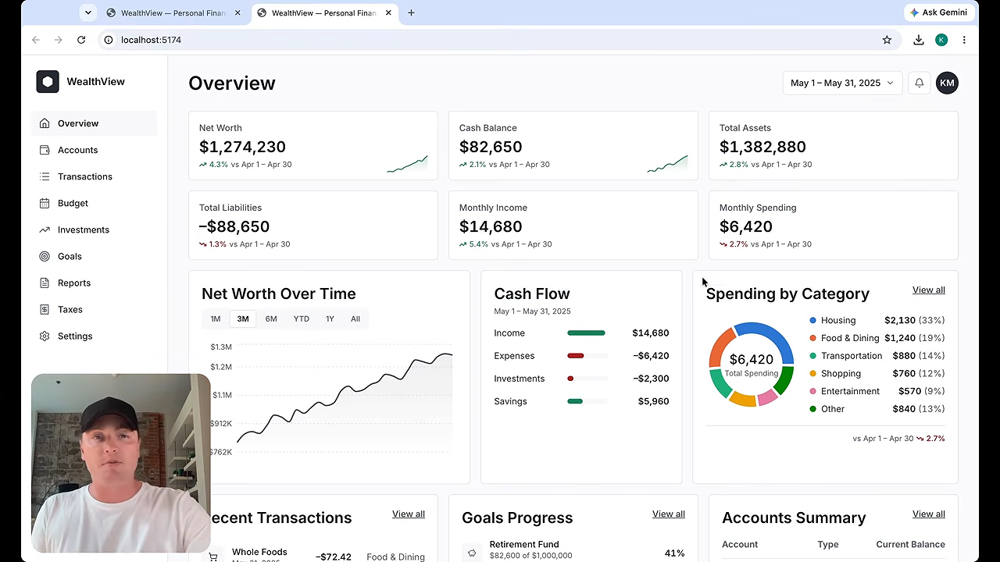
일부러 다듬지 않은 첫 결과를 보여 줬다고 해요. AI로 아이디어를 내고, Antigravity로 프로토타입과 QA를 하고, 디자인 시스템을 연결하기까지 몇 시간이면 돼요. 이 흐름을 면접에서 설명하면 도구를 넘나들며 디자인 시스템까지 연결하는 시니어급 워크플로로 보인다고 해요.
문서화와 감사도 스킬에 맡기기
디자인 바깥의 디자인 일, 예를 들면 컴포넌트 문서화와 감사에도 AI를 쓸 수 있어요. 여기에도 맞는 방법과 틀린 방법이 있어요.
문서화의 핵심은 일관성
컴포넌트 문서라면 모든 컴포넌트가 같은 구조와 정보를 가져야 해요. 어떤 컴포넌트에는 사용 가이드가 있고 어떤 컴포넌트에는 없으면 개발자가 헷갈려요. 흔한 실수는 Figma 링크를 붙이고 "이거 문서 만들어 줘"라고만 하는 거예요. 그러면 매번 다른 구조의 문서가 나와요.
그래서 먼저 문서 구조를 정한 스킬을 만들어요. 아래 프롬프트가 그 요청이에요. 사용자가 컴포넌트 묶음 링크를 주면, 속성·변형·특성을 살핀 뒤 사용 가이드, 변형과 쓰는 때, 속성, 해야 할 것과 하지 말 것, 접근성 고려 사항을 담은 문서를 만들라고 해요.
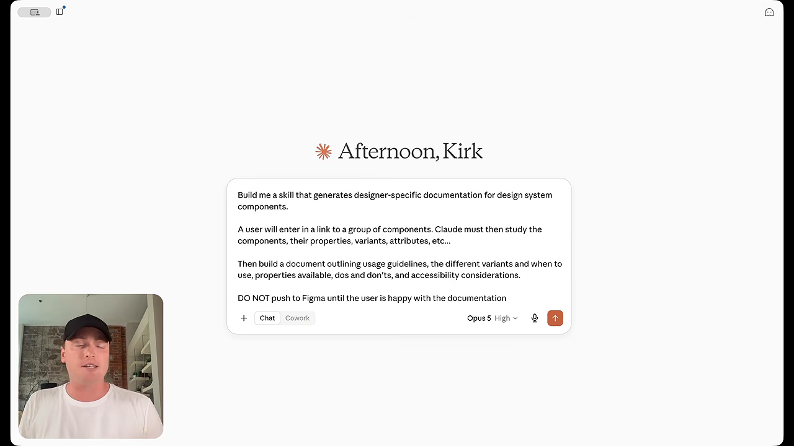
스킬을 저장하고 버튼 컴포넌트로 시험했어요. 아래 문서 페이지에는 개요, 구조, 사용 가이드, 상태별 변형, 미리보기, 속성, 해야 할 것과 하지 말 것, 접근성이 차례로 있어요. 가운데 노란 상자 'Before you use this set'은 크기가 다른 버튼 세트와 헷갈리지 말라는 안내예요.
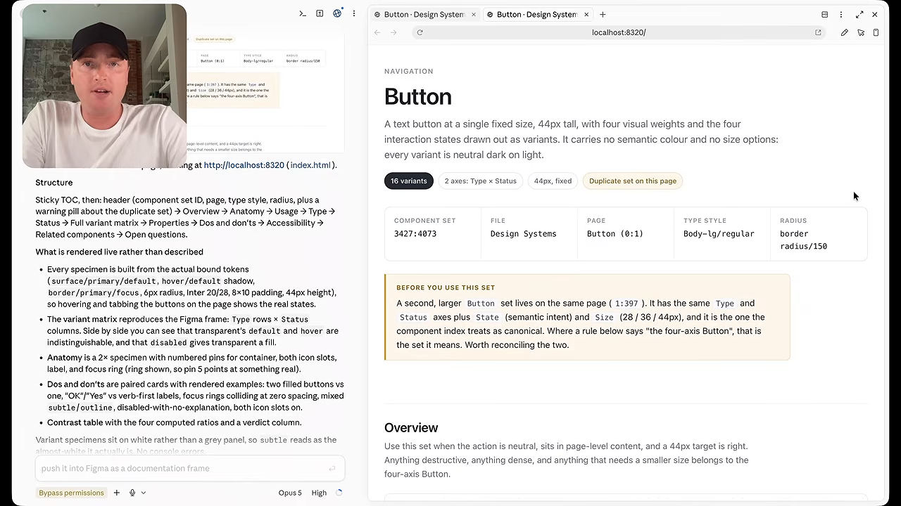
내용을 확인한 뒤 'Figma에 올려 줘'라고 하면, 디자인 시스템 파일 안에 문서 페이지가 생겨요. 아래 화면 왼쪽 페이지 목록에서 Button이 선택돼 있고, 캔버스에 Overview, Anatomy, Usage가 이어지는 문서가 보여요.
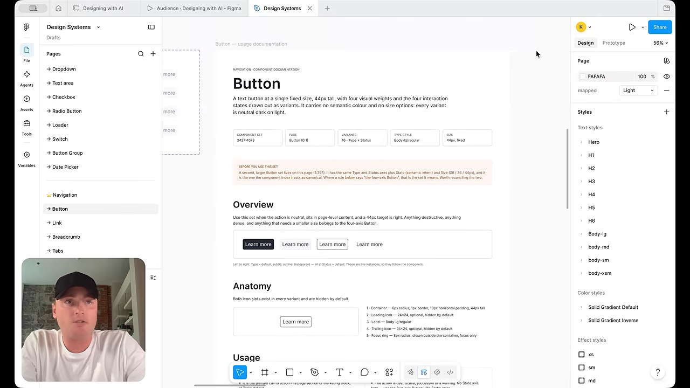
Anthropic 디자인 플러그인: 접근성 검토만 골라 쓰기
Claude의 플러그인 목록에는 Anthropic이 만든 Design 플러그인이 있어요. 아래 화면의 설명처럼 디자인 비평, 디자인 시스템 관리, UX(User Experience) 문구, 접근성 감사, 리서치 종합, 개발자 핸드오프를 다뤄요.
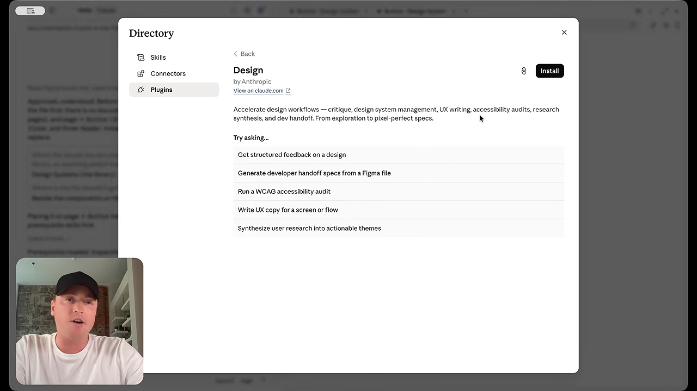
발표자의 평가는 분명해요. 디자인 시스템 관리 스킬은 믿지 않아요. 디자인 시스템은 사람이 전부 들여다봐야 하는 일이기 때문이에요. UX 문구는 쓸 만할 수도 있지만 큰 가치를 못 느꼈고, 리서치 종합과 개발자 핸드오프는 정해진 방식이 따로 있다고 봐요. 가치를 찾은 건 접근성 검토 스킬 하나예요.
Figma 에이전트가 예전에 만든 화면 하나의 링크를 주고 접근성 검토 스킬을 부르자, 아래 결과가 나왔어요. 맨 위 요약에 22건(심각 3, 주요 13, 경미 6)이라고 적혀 있어요. 아래 표는 이슈마다 WCAG 기준 번호, 심각도, 고칠 방법을 적어요. 1번은 약관 문구의 대비가 2.74:1밖에 안 된다는 심각 이슈예요.
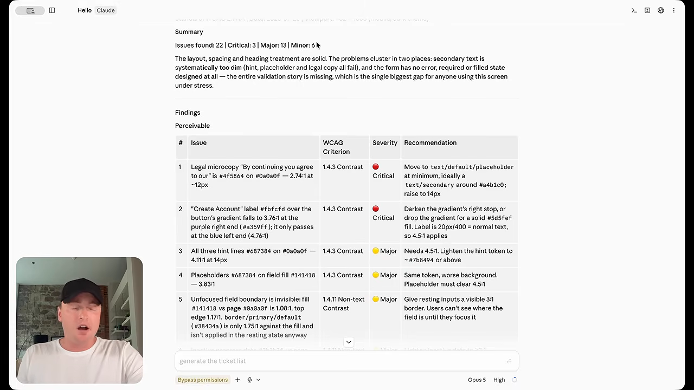
이 정도로 자세하니, 접근성 감사용 스킬을 따로 만들 필요는 없다고 봐요.
디자인 시스템 연결 상태를 감사하는 스킬
Figma 커뮤니티 스킬 중에 따로 설치해야 하는 유용한 스킬이 하나 있어요. 'audit-design-system'이에요. Figma가 만든 스킬이 아니라서 Figma 플러그인을 설치해도 함께 들어오지 않아요. 스킬 카드를 누르면 아래처럼 GitHub의 SKILL.md로 가요. 이 파일을 내려받아 Claude의 스킬 설정에서 '스킬 올리기'로 끌어다 놓으면 설치돼요.
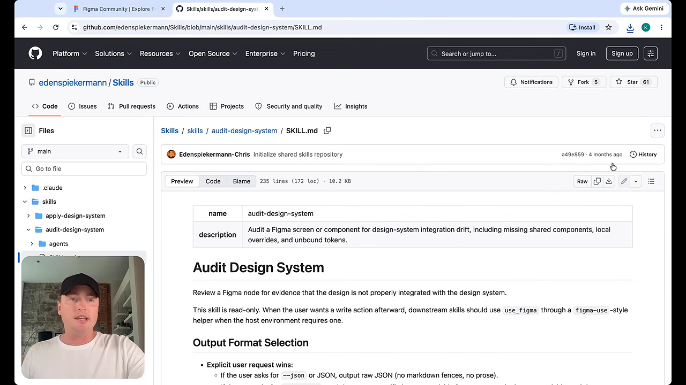
디자인 시스템에 거의 연결되지 않은 Figma 프레임 링크를 주고 이 스킬을 불렀어요. 아래 Findings 표는 심각도 순으로 문제를 늘어놓고 Figma 노드 번호를 붙여요. 1번 심각 항목은 '표 세 개를 Table 컴포넌트 대신 78개의 cell 프레임으로 손수 만들었다'예요. 그 아래에는 근거와, 왜 문제인지, 대신 쓸 컴포넌트가 이어져요.
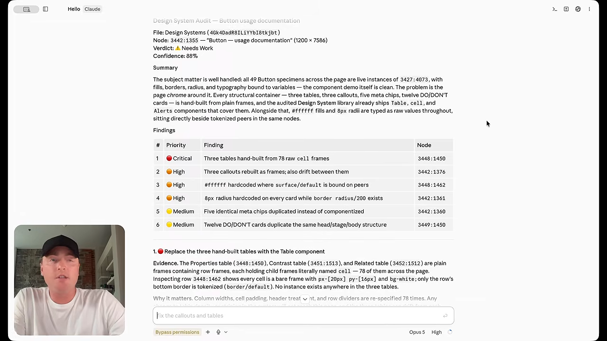
디자인 시스템을 AI에 연결하는 다섯 가지 스킬
이제 디자인 시스템 스킬이에요. AI가 만든 디자인을 회사 디자인 시스템에 가깝게 붙잡아 두는 스킬들이고, Codex든 Claude든 Figma 안에서든 똑같이 동작해요. 완벽해지지는 않는다는 전제는 깔고 가요.
아래 슬라이드가 발표자가 만드는 스킬 묶음이에요. 위에서부터 토큰, 컴포넌트, 간격과 모양, 규칙과 기술 부채예요. 실습에서는 여기에 타입 스타일 스킬이 하나 더 붙어요.
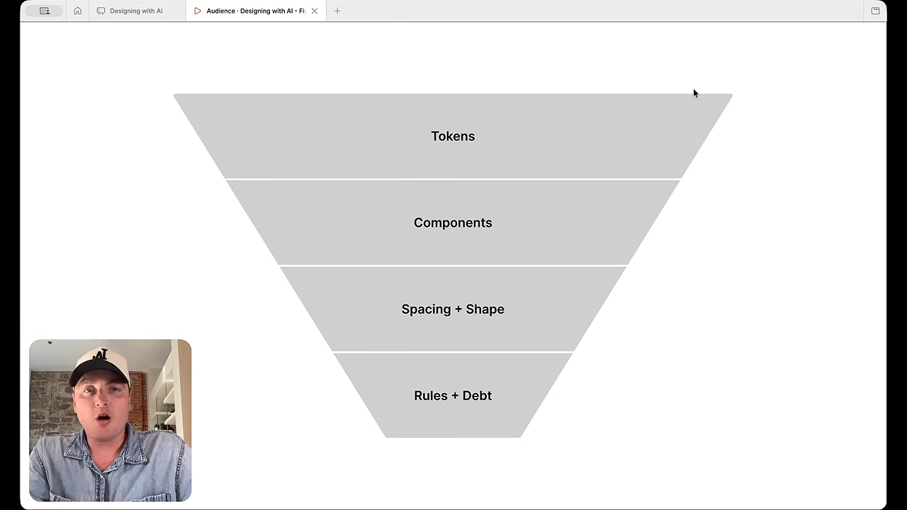
규칙과 기술 부채: 사람이 써야 하는 스킬
규칙은 조직마다 다른 사용 원칙이에요. 체크박스 선택과 선택형 메뉴 중 언제 무엇을 쓰는지, 라디오 버튼과 체크박스 중 무엇을 쓰는지 같은 거예요. 둘은 기능이 다르지만, 어떤 회사는 '선택지가 넷을 넘으면 체크박스, 그보다 적으면 라디오 버튼'처럼 자체 규칙을 두기도 해요.
기술 부채는 알지만 어쩔 수 없는 문제예요. 모든 제품에 퍼져 있어서 고치는 데 개발비 200만 달러가 든다는 식이에요. 예를 들어 기본 버튼의 색 조합이 접근성 기준에 못 미치는데 바꿀 수 없는 경우예요. 이걸 적어 두지 않으면 AI가 감사하다가 그걸 고치려 들어요.
이 스킬은 조직마다 달라서 영상에서 직접 만들지 않아요. 대신 아래 슬라이드의 두 질문에 답을 적어 Claude에 주면 된다고 해요.
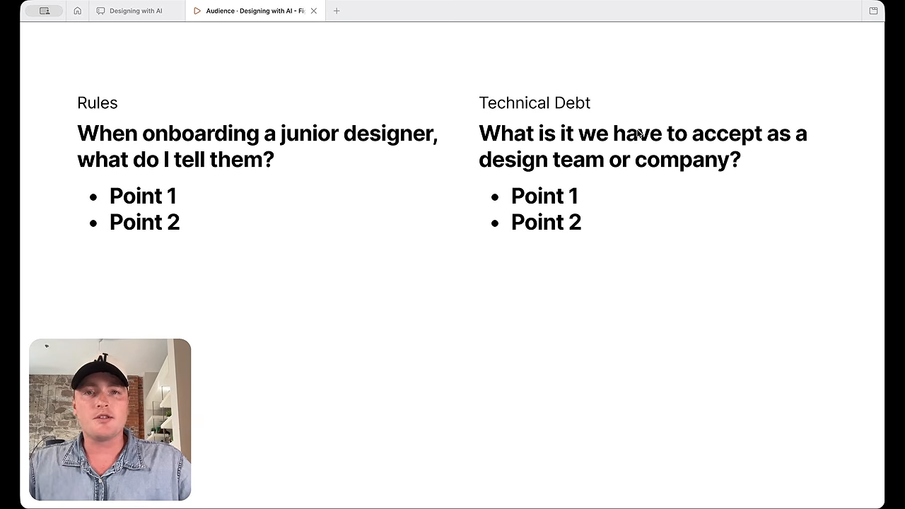
디자인 시스템을 잘 아는 사람이 따로 있다면 그 사람과 함께 써야 해요.
변수 스킬: 설명이 가장 중요해요
Figma 변수는 곧 디자인 토큰이에요. 먼저 실제로 쓰이는 변수만 골라요. 값이 붙지 않은 원시 스케일은 빼고, 컴포넌트나 디자인에 실제로 적용될 수 있는 변수만 남겨요. 보통 표면(배경), 텍스트, 아이콘, 테두리 변수로 묶여요. 아래가 발표자의 변수 라이브러리예요. 'mapped' 컬렉션에 라이트와 다크 두 열이 있고, 표면 그룹 아래 default, secondary, page, page-secondary가 보여요.
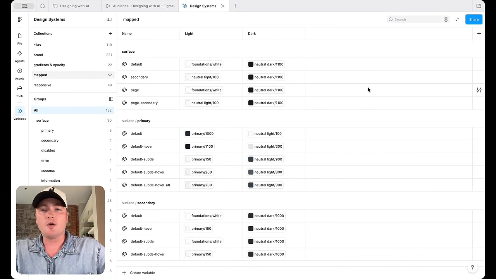
그래서 표를 하나 따로 만들어 둬요. 아래처럼 변수 이름, 라이트 모드 값, 다크 모드 값, 그리고 맨 오른쪽 Description 열에 언제 쓰는지를 적어요. 예를 들어 'default'는 대부분의 UI 화면에 쓰는 기본 배경, 'secondary'는 묶거나 층을 나눌 때 쓰는 더 밝은 배경이에요.
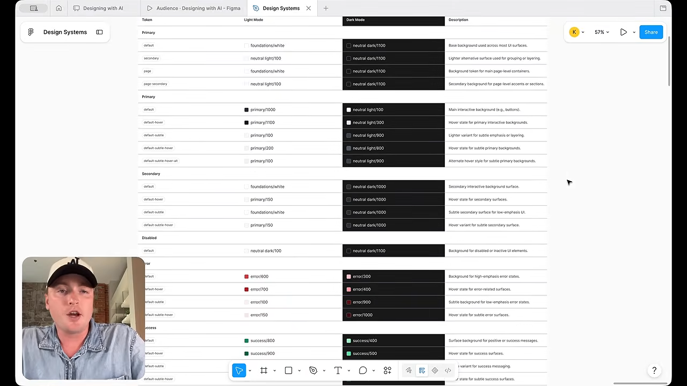
이 표가 있는 영역의 링크를 복사해서 '이 프레임의 변수를 살펴보고 어떤 변수를 언제 쓰는지에 대한 스킬을 만들어 줘'라고 해요. 앞에서 연결한 Figma 스킬과 MCP로 프레임을 읽고, 아래 같은 스킬을 만들어요. 오른쪽 token-inventory.md에 변수마다 'Use for' 설명이 붙어 있어요.
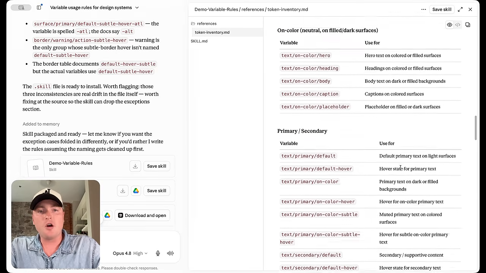
컴포넌트 스킬: 그룹별로 나눠 보게 하기
디자인 시스템 링크 하나를 주고 "컴포넌트 규칙을 만들어"라고 하면, AI가 컴포넌트 사이를 이리저리 오가다 실수해요. 그래서 카테고리별로 쪼개요. 아래 Figma 페이지 목록에서 별표가 붙은 Navigation 아래에 Button, Link, Breadcrumb, Tabs 같은 컴포넌트가 있고, 그 아래 Data Display 그룹이 또 있어요.
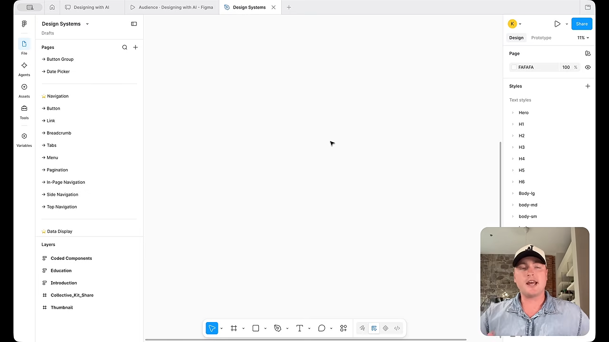
이상적으로는 카테고리마다 스킬을 하나씩 두지만, 영상에서는 폼, 내비게이션, 데이터 표시 세 그룹을 한 스킬로 묶었어요. 사용 가이드 문서가 있다면 같이 주면 좋아요. 아래 결과 오른쪽의 navigation.md에는 컴포넌트마다 Status, Type, Size 같은 속성 값과, 언제 쓰는지('Use when') 설명이 있어요.
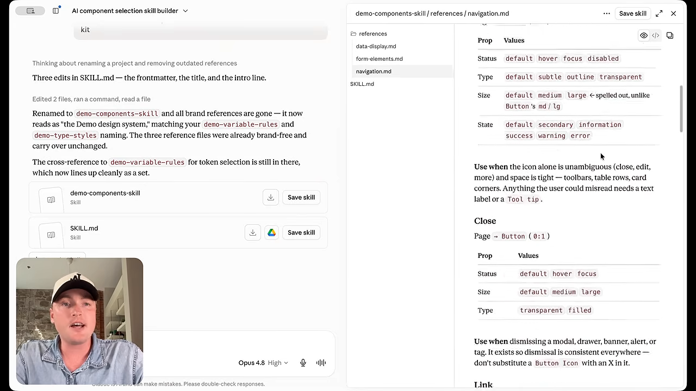
타입 스타일, 그리고 간격과 모양
타입 스타일도 같은 방식이에요. 타입 스케일이 정리된 곳의 링크를 주거나, 오른쪽 패널의 스타일을 읽게 하면 돼요. 아래 결과는 제목 단계마다 크기, 줄 높이, 문단 간격, 쓰는 곳을 표로 정리했어요. Hero는 96에 112, H1은 72에 88처럼요.
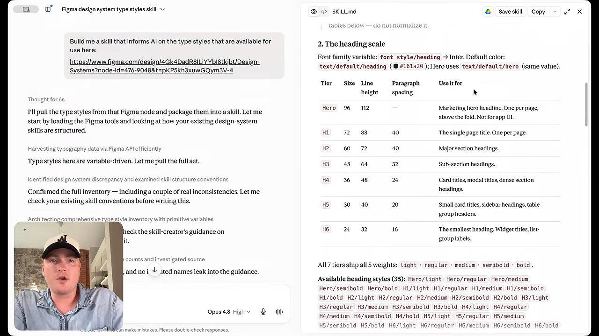
마지막은 '간격과 모양'이라는, 나머지를 담는 스킬이에요. 모서리 반경이 네 종류뿐이라면 그것만으로 스킬을 따로 만들 필요는 없어요. 패딩과 갭 변수, 모서리 반경, 테두리 두께, 그림자 같은 작은 값을 한 스킬에 모아요. 디자인 시스템이 복잡하면 패딩과 갭만으로 스킬을 따로 둬도 돼요.
정리하면 이렇게 다섯 개예요.
| 스킬 | AI에 주는 것 | 요령 |
|---|---|---|
| 규칙과 기술 부채 | 직접 적은 규칙과, 바꿀 수 없는 문제 목록 | 조직마다 달라서 사람이 써야 해요 |
| 변수(토큰) | 이름, 라이트·다크 값, 설명이 있는 표 | 설명 열이 핵심이에요 |
| 컴포넌트 | 그룹별 Figma 페이지, 사용 가이드 | 카테고리별로 나눠 분석시켜요 |
| 타입 스타일 | 타입 스케일이나 텍스트 스타일 | 단계별 쓰는 곳을 붙여요 |
| 간격과 모양 | 간격, 모서리 반경, 테두리 두께 변수 | 작은 값을 한데 모아요 |
스킬이 있을 때와 없을 때
스킬을 붙여 화면 하나를 만들고 Figma로 보냈어요. 'Wealth that stays in focus'라는 금융 앱 가입 화면이에요. 디자인이 훌륭하진 않지만 요점은 디자인 시스템을 지키느냐예요. 오른쪽 Selection colors를 보면 text/default/heading, surface/primary/default, icon/success/default처럼 모든 색이 디자인 시스템 변수예요.
비교를 위해 스킬 없이 Figma 에이전트에게 만들게 한 화면이에요. 겉보기엔 멀쩡하지만, 아래에서 선택된 'Get Started' 버튼은 컴포넌트가 아니라 도형이에요. 오른쪽 패널을 보면 버튼 글자의 채우기가 surface/page예요. 텍스트에 표면 변수를 쓴 거라 말이 안 돼요. 모서리 반경도 적용되지 않았어요.
AI가 디자인 시스템을 만들어 줄 수 있을까요?
자주 받는 질문이에요. AI가 디자인 시스템을 만들어 줄 수 있을까요? 발표자의 답은 "아니요"예요. 'AI가 내 디자인 시스템을 만들었다'는 영상은 대개 스타일 몇 개, 변수 몇 개, 버튼 컴포넌트 하나를 만든 거예요. 그건 실제 디자인 시스템의 1000분의 1이라고 해요. 컴포넌트를 만들어 줘도 제대로 만들어졌는지, 구조가 어떤지, 브랜드에 맞는지는 보장되지 않아요.
맡겨도 되는 일: 타입 스케일
그래도 AI가 잘하는 일은 있어요. Claude에 '타입 스케일을 만들어 줘. 제목은 Inter, 본문은 Roboto, Apple 느낌으로. H1부터 H6, 캡션부터 큰 문단까지'라고 했어요. 모바일 모드도 추가하라고 하자 아래처럼 데스크톱과 모바일 두 모드에 걸쳐 크기, 줄 높이, 문단 간격 변수를 만들고, 그 변수를 텍스트 스타일 안에 묶었어요.
조건은 하나예요. 타입 스케일의 수학을 알고, 숫자들이 서로 맞물리는지 판단할 수 있어야 해요.
맡기면 안 되는 일: 변수(디자인 토큰)
발표자는 변수를 AI에 맡기는 걸 부엌 시공에 비유해요. "어두운 부엌이 좋아요"라고만 하면, 시공자는 마호가니 바닥과 갈색 의자를 들고 올 수 있어요. 정작 원한 건 아래 사진처럼 검은 수납장, 흰 의자, 금색 손잡이였는데요. 그래서 부엌을 지을 때는 가전, 수납장, 의자, 싱크대를 하나하나 고르죠.
그래서 "AI가 이걸 줬는데 맞나요?"라는 질문에는 답하지 않는다고 해요. 디자인 시스템을 업으로 하는 자신도 남의 제품과 대화 맥락을 모르면 판단할 수 없어요. 그걸 물어야 한다는 것 자체가 변수 구조의 기초가 빠져 있다는 뜻이라고 봐요.
직접 시험해 봤어요. '두 브랜드를 지원하는 변수 라이브러리를 만들어 줘. 주 색은 진회색, 보조 색은 보라색'. 아래 결과에는 원시값(Primitives)과 테마(Theme) 컬렉션이 생겼고, 테마에 Brand A, Brand B 두 열과 표면, 텍스트, 테두리, 아이콘, 간격, 반경 변수가 있어요.
더 큰 문제는 다크 모드예요. 원시값 컬렉션에는 모드가 하나뿐이에요. 테마 컬렉션은 이미 Brand A와 Brand B를 모드로 쓰고 있으니, 다크 모드를 원시값에 넣고 싶어져요. 아래 화면이 그렇게 Light와 Dark 두 열을 추가한 상태예요.
발표자의 설명을 그림으로 옮기면 이래요. 같은 회색이라도 어떤 컴포넌트에, 어떤 조합으로 쓰이느냐에 따라 다크 모드에서 필요한 값이 달라요. 그런데 원시값에 다크 모드를 넣으면 모든 쓰임이 같은 값을 받아요. 오른쪽은 발표자가 앞에서 보여 준 자기 라이브러리 방식이에요. 매핑된 변수마다 라이트와 다크 값을 따로 골라요.
AI가 변수를 만들 수는 있어요. 하지만 맞다는 보장은 없고, 오히려 거꾸로 해석하는 데 더 많은 시간이 들어요. 한두 시간이면 직접 변수 라이브러리를 만드는 법을 배울 수 있으니 게으르지 말라는 게 발표자의 당부예요.
컴포넌트도 마찬가지예요
Figma 에이전트에게 '테이블 컴포넌트를 만들어 줘'라고 하자, 아래 같은 팀원 목록 테이블이 나왔어요. 체크박스, 이름, 상태, 마지막 활동, 작업 다섯 열이에요. 디자인 시스템에 익숙하지 않으면 "테이블 컴포넌트 완성"이라고 받아들이기 쉬워요.
상태 열을 배지가 아니라 다른 텍스트로 바꾸려면 컴포넌트에 들어가 복사하고 지워야 해요. 그렇게 바꾸자 아래처럼 바로 정렬이 무너졌어요. 상태 열 위치에 날짜가 들어가 있고, 열 머리와 내용이 어긋나요.
발표자가 말하는 올바른 구조는 이래요. 셀 아톰 컴포넌트와 헤더 아톰 컴포넌트를 두고, 셀마다 여러 변형을 준비해요. 그리고 셀을 헤더와 행으로 묶어요. 어떤 테이블은 행 전체에 hover가 걸리고, 어떤 테이블은 셀 하나에만 걸리기 때문이에요.
지금 필요 없어 보이는 조합까지 미리 대비해야 해요. 그렇지 않으면 여섯 달 뒤 개발팀에 넘긴 컴포넌트가 쓰임새를 다 받쳐 주지 못해서 처음부터 다시 만들게 돼요. 버튼, 라벨, 입력창 같은 쉬운 컴포넌트가 아니라 이런 복잡한 컴포넌트가 문제라고 해요.
설계 리뷰에서 "왜 이 변형을 썼어요?", "왜 이 속성이 없어요?"라는 질문을 받거나, 개발자가 변형을 언제 쓰냐고 물을 때, 직접 만들지 않은 디자이너는 답하지 못해요. 발표자의 표현으로는 AI로 디자인 시스템을 만들면 10시간 만들고 100시간 동안 무엇을 만들었는지 알아내게 돼요. 3시간 들여 직접 만드는 법을 배우라고 권해요.
스크롤로 움직이는 인터랙션 만들기
마지막은 프로덕트 디자인보다는 재미로 보여 주는 실습이에요. 이미지와 영상 생성 모델을 엮어, 스크롤하면 차가 돌아가는 웹사이트 히어로를 만들어요. 고객용 웹 경험을 만들 때 응용할 수 있어요.
이미지 한 장에서 시작해요
Higgsfield는 여러 이미지·영상 생성 모델을 한곳에서 쓰게 해 주는 서비스예요. 이미지 모델로 Nano Banana Pro를 고르고, 웹사이트에 맞게 가로세로 비율을 16:9로 바꾼 뒤 '흰 배경의 빨간 Tesla 이미지를 만들어 줘'라고 했어요. 아래 화면 아래쪽 입력창에 그 프롬프트가 보여요.
받은 이미지를 Figma에 넣으니 배경 색이 가장자리에서 뚝 끊겨서 웹에 쓰기 어려웠어요. 그래서 프레임을 넓히고 Figma의 이미지 확장 기능으로 배경을 늘렸어요. 그리고 이미지를 하나 복제해 좌우를 뒤집고, 하나는 시작 프레임, 하나는 끝 프레임으로 이름을 붙였어요. 아래가 그 두 장이에요.
두 프레임 사이를 영상으로
영상 생성에서는 Kling 3.0을 골라요. 시작 프레임과 끝 프레임을 주면 그 사이를 이어 주는 데 강한 모델이에요. 아래 화면 왼쪽 위에 두 이미지가 들어가 있고, 모델 Kling 3.0, 길이 5초가 설정돼 있어요. 프롬프트는 비워 두고 생성했어요.
영상을 프레임으로 쪼개 스크롤에 연결해요
이 시점에 Claude가 장애로 멈춰서 Grok을 썼어요. 먼저 시작 프레임 이미지를 주고 'Tesla 느낌의 웹사이트 히어로를 이 이미지를 배경으로 만들어 줘'라고 해서 히어로를 만들어요.
그다음이 핵심이에요. 영상은 결국 이미지 수백 장을 빠르게 넘기는 거예요. 영상을 배경에서 반복 재생하면 어색하니, 사용자가 스크롤로 어느 프레임을 볼지 직접 정하게 해요. 그래서 MP4(MPEG-4 Part 14) 경로를 주고 이렇게 요청했어요. 'FFmpeg로 영상을 프레임으로 쪼개고 배경 이미지를 그 프레임으로 바꿔 줘. 스크롤하면 프레임이 바뀌고, 차 주변 문구도 함께 바뀌어서 하나의 경험이 되게 해 줘.'
결과가 아래 히어로예요. 처음에는 'Model 3' 제목 아래 차가 정면에 가깝게 서 있어요. 천천히 스크롤하면 프레임이 바뀌며 차가 돌고, 차가 보여 주는 면에 맞춰 왼쪽과 오른쪽에 문구가 나타나요. 차의 각도와 문구를 모두 스크롤 하나로 조종하는 거예요.
같은 방식은 Seedance 2.0 같은 영상 모델로 만든 긴 광고 영상에도 쓸 수 있어요. 발표자는 Tesla 세 대가 나오고 실내와 무선 충전 장면으로 이어지는 영상을 장면별로 쪼개, 구간마다 다른 문구를 보여 주는 예를 함께 보여 줘요.
마무리: 도구를 나눠 쓰는 게 AI로 디자인하는 방법
AI는 아직 디자이너를 대체하지 않아요. 디자이너는 디자인 엔지니어 쪽으로 옮겨 가고 있고, 3~4년 전처럼 모든 걸 Figma 안에서 하던 시절과는 달라요. 오토 레이아웃과 디자인 시스템 사용 같은 일은 AI가 많이 도와줘요.
그리고 모든 걸 해 주는 도구는 없어요. Antigravity는 QA, Grok은 반복, Claude와 Claude Code는 디자인 시스템 따르기처럼 각자 잘하는 일에 맞춰 도구를 오가는 게 지금 AI로 디자인하는 방법이에요. 앞으로 여섯 달, 1년 뒤 무엇이 바뀔지는 아무도 모른다는 말로 영상을 끝내요.